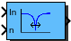

| Inports
| |
| In | Input signal |
| n | Speed input = notch frequency |
| Outports
| |
| Out | Filtered output signal |
| Mask Parameters | ||
| Name | ID | Description |
| Q | 1 | Q-Factor of the notch filter |
| n_thresh | 2 | Speed threshold for activating the filter |
| n_max | 3 | Maximum revolutions per minute (Not used in floating point implementations) |
| p | 4 | Number of pole pairs |
| ts_fact | 5 | Multiplication factor of base sampling time (in integer format) |
| method | 6 | Discretization method |
Notch filter with variable notch frequency
Calculation:
|
|
The transfer function H(z) of the filter is
|
|
with coefficients derived from the transfer function
|
|
by a matched Z-transformation.
| FiP16 | 16 Bit Fixed Point Implementation |
| FiP32 | 32 Bit Fixed Point Implementation |
| Float32 | 32 Bit Floating Point Implementation |
| Float64 | 64 Bit Floating Point Implementation |
16 Bit Fixed Point Implementation
| Inports Data Type
| |
| In | int16 |
| n | int16 |
| Outports Data Type
| |
| Out | int16 |
32 Bit Fixed Point Implementation
| Inports Data Type
| |
| In | int32 |
| n | int32 |
| Outports Data Type
| |
| Out | int32 |
32 Bit Floating Point Implementation
| Inports Data Type
| |
| In | float32 |
| n | float32 |
| Outports Data Type
| |
| Out | float32 |
64 Bit Floating Point Implementation
| Inports Data Type
| |
| In | float64 |
| n | float64 |
| Outports Data Type
| |
| Out | float64 |